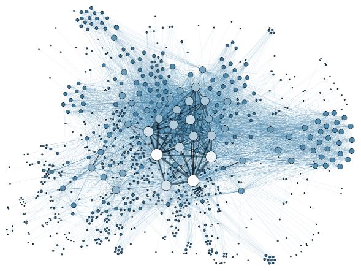

Centralized or distributed chatbots ?

Hi Hamza!
I agree with your analysis regarding privacy and myself too, as chatbots researcher and developer, I’m concerned on “artificial intelligence” centralized black-boxes that big players push now (btw, IBM Watson is another monolith to add to the “black” list). Joking ;-)
The good news, in my modest opinion, is that cloud-based chatbots services idiom that now seem prevalent, is NOT the only one possible.
I’m unhappy with this idea that any “machine intelligence” (specifically in this case of chatbots: natural language understanding engines or any other machine learning facility) must owned by proprietary “pay-per-service”.
By example, I immagine in a future, a net of distributed chatbots (sometime interconnected in a collaborative mesh network, sometime isolated in a one-to-one relationship among users and a single chatbot services), without passing through any “central engine” (that possibly could collect any conversation, so any users data).
In that way I’m interested on AI “democratization” that pass through open-source (dev/data) projects. And specifically that’s the reason I do my small contribute helping Bruce Wilcox’s ChatScript project :)
But also in this scenario privacy concerns on the “channel” (instant messaging app or a smart-home voice-device), still remain.
Wire is promising regarding this requirement, but also Telegram Messenger appears to me to already respect the same user privacy “ideology”.
What do you think about it ?
respect
giorgio